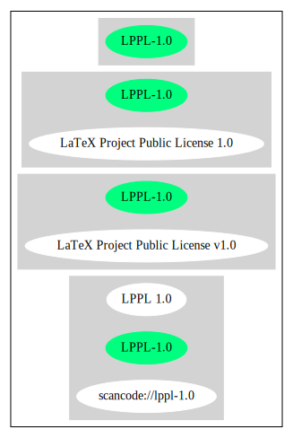

Key |
Value |
|---|---|
Fullname |
LaTeX Project Public License v1.0 |
Shortname |
LPPL-1.0 |
Rating |
Unknown, probably Attention or Stop or No-Go |
Classification |
Copyleft |
Other Names:
scancode://lppl-1.0
LPPL 1.0
“Per SPDX.org, this license was released 1 Mar 1999” (source: Scancode)
Homepage: http://www.latex-project.org/lppl/lppl-1-0.txt
SPDX: http://spdx.org/licenses/LPPL-1.0.json
LaTeX Project Public License
============================
LPPL Version 1.0 1999-03-01
Copyright 1999 LaTeX3 Project
Everyone is permitted to copy and distribute verbatim copies
of this license document, but modification is not allowed.
Preamble
========
The LaTeX Project Public License (LPPL) is the license under which the
base LaTeX distribution is distributed. As described below you may use
this licence for any software that you wish to distribute.
It may be particularly suitable if your software is TeX related (such
as a LaTeX package file) but it may be used for any software, even if
it is unrelated to TeX.
To use this license, the files of your distribution should have an
explicit copyright notice giving your name and the year, together
with a reference to this license.
A typical example would be
%% pig.sty
%% Copyright 2001 M. Y. Name
% This program can redistributed and/or modified under the terms
% of the LaTeX Project Public License Distributed from CTAN
% archives in directory macros/latex/base/lppl.txt; either
% version 1 of the License, or (at your option) any later version.
Given such a notice in the file, the conditions of this document would
apply, with:
`The Program' referring to the software `pig.sty' and
`The Copyright Holder' referring to the person `M. Y. Name'.
To see a real example, see the file legal.txt which carries the
copyright notice for the base latex distribution.
This license gives terms under which files of The Program may be
distributed and modified. Individual files may have specific further
constraints on modification, but no file should have restrictions on
distribution other than those specified below.
This is to ensure that a distributor wishing to distribute a complete
unmodified copy of The Program need only check the conditions in this
file, and does not need to check every file in The Program for extra
restrictions. If you do need to modify the distribution terms of some
files, do not refer to this license, instead distribute The Program
under a different license. You may use the parts of the text of LPPL as
a model for your own license, but your license should not directly refer
to the LPPL or otherwise give the impression that The Program is
distributed under the LPPL.
The LaTeX Project Public License
================================
Terms And Conditions For Copying, Distribution And Modification
===============================================================
WARRANTY
========
There is no warranty for The Program, to the extent permitted by
applicable law. Except when otherwise stated in writing, The
Copyright Holder provides The Program `as is' without warranty of any
kind, either expressed or implied, including, but not limited to, the
implied warranties of merchantability and fitness for a particular
purpose. The entire risk as to the quality and performance of the
program is with you. Should The Program prove defective, you assume
the cost of all necessary servicing, repair or correction.
In no event unless required by applicable law or agreed to in writing
will The Copyright Holder, or any of the individual authors named in
the source for The Program, be liable to you for damages, including
any general, special, incidental or consequential damages arising out
of any use of The Program or out of inability to use The Program
(including but not limited to loss of data or data being rendered
inaccurate or losses sustained by you or by third parties as a result
of a failure of The Program to operate with any other programs), even
if such holder or other party has been advised of the possibility of
such damages.
DISTRIBUTION
============
Redistribution of unchanged files is allowed provided that all files
that make up the distribution of The Program are distributed.
In particular this means that The Program has to be distributed
including its documentation if documentation was part of the original
distribution.
The distribution of The Program will contain a prominent file
listing all the files covered by this license.
If you receive only some of these files from someone, complain!
The distribution of changed versions of certain files included in the
The Program, and the reuse of code from The Program, are allowed
under the following restrictions:
* It is allowed only if the legal notice in the file does not
expressly forbid it.
See note below, under "Conditions on individual files".
* You rename the file before you make any changes to it, unless the
file explicitly says that renaming is not required. Any such changed
files must be distributed under a license that forbids distribution
of those files, and any files derived from them, under the names used
by the original files in the distribution of The Program.
* You change any `identification string' in The Program to clearly
indicate that the file is not part of the standard system.
* If The Program includes an `error report address' so that errors
may be reported to The Copyright Holder, or other specified
addresses, this address must be changed in any modified versions of
The Program, so that reports for files not maintained by the
original program maintainers are directed to the maintainers of the
changed files.
* You acknowledge the source and authorship of the original version
in the modified file.
* You also distribute the unmodified version of the file or
alternatively provide sufficient information so that the
user of your modified file can be reasonably expected to be
able to obtain an original, unmodified copy of The Program.
For example, you may specify a URL to a site that you expect
will freely provide the user with a copy of The Program (either
the version on which your modification is based, or perhaps a
later version).
* If The Program is intended to be used with, or is based on, LaTeX,
then files with the following file extensions which have special
meaning in LaTeX Software, have special modification rules under the
license:
- Files with extension `.ins' (installation files): these files may
not be modified at all because they contain the legal notices
that are placed in the generated files.
- Files with extension `.fd' (LaTeX font definitions files): these
files are allowed to be modified without changing the name, but
only to enable use of all available fonts and to prevent attempts
to access unavailable fonts. However, modified files are not
allowed to be distributed in place of original files.
- Files with extension `.cfg' (configuration files): these files
can be created or modified to enable easy configuration of the
system. The documentation in cfgguide.tex in the base LaTeX
distribution describes when it makes sense to modify or generate
such files.
The above restrictions are not intended to prohibit, and hence do
not apply to, the updating, by any method, of a file so that it
becomes identical to the latest version of that file in The Program.
========================================================================
NOTES
=====
We believe that these requirements give you the freedom you to make
modifications that conform with whatever technical specifications you
wish, whilst maintaining the availability, integrity and reliability of
The Program. If you do not see how to achieve your goal whilst
adhering to these requirements then read the document cfgguide.tex
in the base LaTeX distribution for suggestions.
Because of the portability and exchangeability aspects of systems
like LaTeX, The LaTeX3 Project deprecates the distribution of
non-standard versions of components of LaTeX or of generally available
contributed code for them but such distributions are permitted under the
above restrictions.
The document modguide.tex in the base LaTeX distribution details
the reasons for the legal requirements detailed above.
Even if The Program is unrelated to LaTeX, the argument in
modguide.tex may still apply, and should be read before
a modified version of The Program is distributed.
Conditions on individual files
==============================
The individual files may bear additional conditions which supersede
the general conditions on distribution and modification contained in
this file. If there are any such files, the distribution of The
Program will contain a prominent file that lists all the exceptional
files.
Typical examples of files with more restrictive modification
conditions would be files that contain the text of copyright notices.
* The conditions on individual files differ only in the
extent of *modification* that is allowed.
* The conditions on *distribution* are the same for all the files.
Thus a (re)distributor of a complete, unchanged copy of The Program
need meet only the conditions in this file; it is not necessary to
check the header of every file in the distribution to check that a
distribution meets these requirements.{
"__impliedNames": [
"LPPL-1.0",
"LaTeX Project Public License v1.0",
"scancode://lppl-1.0",
"LPPL 1.0"
],
"__impliedId": "LPPL-1.0",
"facts": {
"SPDX": {
"isSPDXLicenseDeprecated": false,
"spdxFullName": "LaTeX Project Public License v1.0",
"spdxDetailsURL": "http://spdx.org/licenses/LPPL-1.0.json",
"_sourceURL": "https://spdx.org/licenses/LPPL-1.0.html",
"spdxLicIsOSIApproved": false,
"spdxSeeAlso": [
"http://www.latex-project.org/lppl/lppl-1-0.txt"
],
"_implications": {
"__impliedNames": [
"LPPL-1.0",
"LaTeX Project Public License v1.0"
],
"__impliedId": "LPPL-1.0",
"__isOsiApproved": false,
"__impliedURLs": [
[
"SPDX",
"http://spdx.org/licenses/LPPL-1.0.json"
],
[
null,
"http://www.latex-project.org/lppl/lppl-1-0.txt"
]
]
},
"spdxLicenseId": "LPPL-1.0"
},
"Scancode": {
"otherUrls": null,
"homepageUrl": "http://www.latex-project.org/lppl/lppl-1-0.txt",
"shortName": "LPPL 1.0",
"textUrls": null,
"text": "LaTeX Project Public License\n============================\n LPPL Version 1.0 1999-03-01\n\nCopyright 1999 LaTeX3 Project\n Everyone is permitted to copy and distribute verbatim copies\n of this license document, but modification is not allowed.\n\nPreamble\n========\nThe LaTeX Project Public License (LPPL) is the license under which the\nbase LaTeX distribution is distributed. As described below you may use\nthis licence for any software that you wish to distribute. \n\nIt may be particularly suitable if your software is TeX related (such\nas a LaTeX package file) but it may be used for any software, even if\nit is unrelated to TeX.\n\nTo use this license, the files of your distribution should have an\nexplicit copyright notice giving your name and the year, together\nwith a reference to this license.\n\nA typical example would be\n\n %% pig.sty\n %% Copyright 2001 M. Y. Name\n\n % This program can redistributed and/or modified under the terms\n % of the LaTeX Project Public License Distributed from CTAN\n % archives in directory macros/latex/base/lppl.txt; either\n % version 1 of the License, or (at your option) any later version.\n\nGiven such a notice in the file, the conditions of this document would\napply, with:\n\n`The Program' referring to the software `pig.sty' and \n`The Copyright Holder' referring to the person `M. Y. Name'.\n\nTo see a real example, see the file legal.txt which carries the\ncopyright notice for the base latex distribution.\n\nThis license gives terms under which files of The Program may be\ndistributed and modified. Individual files may have specific further\nconstraints on modification, but no file should have restrictions on\ndistribution other than those specified below. \nThis is to ensure that a distributor wishing to distribute a complete\nunmodified copy of The Program need only check the conditions in this\nfile, and does not need to check every file in The Program for extra\nrestrictions. If you do need to modify the distribution terms of some\nfiles, do not refer to this license, instead distribute The Program\nunder a different license. You may use the parts of the text of LPPL as\na model for your own license, but your license should not directly refer\nto the LPPL or otherwise give the impression that The Program is\ndistributed under the LPPL. \n\n\nThe LaTeX Project Public License\n================================\nTerms And Conditions For Copying, Distribution And Modification\n===============================================================\n\n\nWARRANTY\n========\nThere is no warranty for The Program, to the extent permitted by\napplicable law. Except when otherwise stated in writing, The\nCopyright Holder provides The Program `as is' without warranty of any\nkind, either expressed or implied, including, but not limited to, the\nimplied warranties of merchantability and fitness for a particular\npurpose. The entire risk as to the quality and performance of the\nprogram is with you. Should The Program prove defective, you assume\nthe cost of all necessary servicing, repair or correction.\n\nIn no event unless required by applicable law or agreed to in writing\nwill The Copyright Holder, or any of the individual authors named in\nthe source for The Program, be liable to you for damages, including\nany general, special, incidental or consequential damages arising out\nof any use of The Program or out of inability to use The Program\n(including but not limited to loss of data or data being rendered\ninaccurate or losses sustained by you or by third parties as a result\nof a failure of The Program to operate with any other programs), even\nif such holder or other party has been advised of the possibility of\nsuch damages.\n\n\nDISTRIBUTION\n============\nRedistribution of unchanged files is allowed provided that all files\nthat make up the distribution of The Program are distributed.\nIn particular this means that The Program has to be distributed\nincluding its documentation if documentation was part of the original\ndistribution.\n\nThe distribution of The Program will contain a prominent file\nlisting all the files covered by this license.\n\nIf you receive only some of these files from someone, complain!\n\nThe distribution of changed versions of certain files included in the\nThe Program, and the reuse of code from The Program, are allowed\nunder the following restrictions:\n\n * It is allowed only if the legal notice in the file does not\n expressly forbid it.\n See note below, under \"Conditions on individual files\".\n \n * You rename the file before you make any changes to it, unless the\n file explicitly says that renaming is not required. Any such changed\n files must be distributed under a license that forbids distribution\n of those files, and any files derived from them, under the names used\n by the original files in the distribution of The Program.\n\n * You change any `identification string' in The Program to clearly \n indicate that the file is not part of the standard system.\n\n * If The Program includes an `error report address' so that errors\n may be reported to The Copyright Holder, or other specified\n addresses, this address must be changed in any modified versions of\n The Program, so that reports for files not maintained by the\n original program maintainers are directed to the maintainers of the\n changed files. \n\n * You acknowledge the source and authorship of the original version\n in the modified file.\n\n * You also distribute the unmodified version of the file or\n alternatively provide sufficient information so that the\n user of your modified file can be reasonably expected to be\n able to obtain an original, unmodified copy of The Program.\n For example, you may specify a URL to a site that you expect\n will freely provide the user with a copy of The Program (either\n the version on which your modification is based, or perhaps a\n later version).\n\n * If The Program is intended to be used with, or is based on, LaTeX,\n then files with the following file extensions which have special\n meaning in LaTeX Software, have special modification rules under the\n license:\n \n - Files with extension `.ins' (installation files): these files may\n not be modified at all because they contain the legal notices\n that are placed in the generated files.\n \n - Files with extension `.fd' (LaTeX font definitions files): these\n files are allowed to be modified without changing the name, but\n only to enable use of all available fonts and to prevent attempts\n to access unavailable fonts. However, modified files are not\n allowed to be distributed in place of original files.\n \n - Files with extension `.cfg' (configuration files): these files\n can be created or modified to enable easy configuration of the\n system. The documentation in cfgguide.tex in the base LaTeX\n distribution describes when it makes sense to modify or generate\n such files.\n \n\nThe above restrictions are not intended to prohibit, and hence do\nnot apply to, the updating, by any method, of a file so that it\nbecomes identical to the latest version of that file in The Program.\n\n========================================================================\n\nNOTES\n=====\nWe believe that these requirements give you the freedom you to make\nmodifications that conform with whatever technical specifications you\nwish, whilst maintaining the availability, integrity and reliability of\nThe Program. If you do not see how to achieve your goal whilst\nadhering to these requirements then read the document cfgguide.tex\nin the base LaTeX distribution for suggestions. \n\nBecause of the portability and exchangeability aspects of systems\nlike LaTeX, The LaTeX3 Project deprecates the distribution of\nnon-standard versions of components of LaTeX or of generally available\ncontributed code for them but such distributions are permitted under the\nabove restrictions.\n\nThe document modguide.tex in the base LaTeX distribution details\nthe reasons for the legal requirements detailed above.\nEven if The Program is unrelated to LaTeX, the argument in\nmodguide.tex may still apply, and should be read before\na modified version of The Program is distributed.\n\n\nConditions on individual files\n==============================\nThe individual files may bear additional conditions which supersede\nthe general conditions on distribution and modification contained in\nthis file. If there are any such files, the distribution of The\nProgram will contain a prominent file that lists all the exceptional\nfiles.\n\nTypical examples of files with more restrictive modification\nconditions would be files that contain the text of copyright notices.\n\n * The conditions on individual files differ only in the\n extent of *modification* that is allowed.\n\n * The conditions on *distribution* are the same for all the files.\n Thus a (re)distributor of a complete, unchanged copy of The Program\n need meet only the conditions in this file; it is not necessary to\n check the header of every file in the distribution to check that a\n distribution meets these requirements.",
"category": "Copyleft",
"osiUrl": null,
"owner": "LaTeX",
"_sourceURL": "https://github.com/nexB/scancode-toolkit/blob/develop/src/licensedcode/data/licenses/lppl-1.0.yml",
"key": "lppl-1.0",
"name": "LaTeX Project Public License v1.0",
"spdxId": "LPPL-1.0",
"notes": "Per SPDX.org, this license was released 1 Mar 1999",
"_implications": {
"__impliedNames": [
"scancode://lppl-1.0",
"LPPL 1.0",
"LPPL-1.0"
],
"__impliedId": "LPPL-1.0",
"__impliedJudgement": [
[
"Scancode",
{
"tag": "NeutralJudgement",
"contents": "Per SPDX.org, this license was released 1 Mar 1999"
}
]
],
"__impliedCopyleft": [
[
"Scancode",
"Copyleft"
]
],
"__calculatedCopyleft": "Copyleft",
"__impliedText": "LaTeX Project Public License\n============================\n LPPL Version 1.0 1999-03-01\n\nCopyright 1999 LaTeX3 Project\n Everyone is permitted to copy and distribute verbatim copies\n of this license document, but modification is not allowed.\n\nPreamble\n========\nThe LaTeX Project Public License (LPPL) is the license under which the\nbase LaTeX distribution is distributed. As described below you may use\nthis licence for any software that you wish to distribute. \n\nIt may be particularly suitable if your software is TeX related (such\nas a LaTeX package file) but it may be used for any software, even if\nit is unrelated to TeX.\n\nTo use this license, the files of your distribution should have an\nexplicit copyright notice giving your name and the year, together\nwith a reference to this license.\n\nA typical example would be\n\n %% pig.sty\n %% Copyright 2001 M. Y. Name\n\n % This program can redistributed and/or modified under the terms\n % of the LaTeX Project Public License Distributed from CTAN\n % archives in directory macros/latex/base/lppl.txt; either\n % version 1 of the License, or (at your option) any later version.\n\nGiven such a notice in the file, the conditions of this document would\napply, with:\n\n`The Program' referring to the software `pig.sty' and \n`The Copyright Holder' referring to the person `M. Y. Name'.\n\nTo see a real example, see the file legal.txt which carries the\ncopyright notice for the base latex distribution.\n\nThis license gives terms under which files of The Program may be\ndistributed and modified. Individual files may have specific further\nconstraints on modification, but no file should have restrictions on\ndistribution other than those specified below. \nThis is to ensure that a distributor wishing to distribute a complete\nunmodified copy of The Program need only check the conditions in this\nfile, and does not need to check every file in The Program for extra\nrestrictions. If you do need to modify the distribution terms of some\nfiles, do not refer to this license, instead distribute The Program\nunder a different license. You may use the parts of the text of LPPL as\na model for your own license, but your license should not directly refer\nto the LPPL or otherwise give the impression that The Program is\ndistributed under the LPPL. \n\n\nThe LaTeX Project Public License\n================================\nTerms And Conditions For Copying, Distribution And Modification\n===============================================================\n\n\nWARRANTY\n========\nThere is no warranty for The Program, to the extent permitted by\napplicable law. Except when otherwise stated in writing, The\nCopyright Holder provides The Program `as is' without warranty of any\nkind, either expressed or implied, including, but not limited to, the\nimplied warranties of merchantability and fitness for a particular\npurpose. The entire risk as to the quality and performance of the\nprogram is with you. Should The Program prove defective, you assume\nthe cost of all necessary servicing, repair or correction.\n\nIn no event unless required by applicable law or agreed to in writing\nwill The Copyright Holder, or any of the individual authors named in\nthe source for The Program, be liable to you for damages, including\nany general, special, incidental or consequential damages arising out\nof any use of The Program or out of inability to use The Program\n(including but not limited to loss of data or data being rendered\ninaccurate or losses sustained by you or by third parties as a result\nof a failure of The Program to operate with any other programs), even\nif such holder or other party has been advised of the possibility of\nsuch damages.\n\n\nDISTRIBUTION\n============\nRedistribution of unchanged files is allowed provided that all files\nthat make up the distribution of The Program are distributed.\nIn particular this means that The Program has to be distributed\nincluding its documentation if documentation was part of the original\ndistribution.\n\nThe distribution of The Program will contain a prominent file\nlisting all the files covered by this license.\n\nIf you receive only some of these files from someone, complain!\n\nThe distribution of changed versions of certain files included in the\nThe Program, and the reuse of code from The Program, are allowed\nunder the following restrictions:\n\n * It is allowed only if the legal notice in the file does not\n expressly forbid it.\n See note below, under \"Conditions on individual files\".\n \n * You rename the file before you make any changes to it, unless the\n file explicitly says that renaming is not required. Any such changed\n files must be distributed under a license that forbids distribution\n of those files, and any files derived from them, under the names used\n by the original files in the distribution of The Program.\n\n * You change any `identification string' in The Program to clearly \n indicate that the file is not part of the standard system.\n\n * If The Program includes an `error report address' so that errors\n may be reported to The Copyright Holder, or other specified\n addresses, this address must be changed in any modified versions of\n The Program, so that reports for files not maintained by the\n original program maintainers are directed to the maintainers of the\n changed files. \n\n * You acknowledge the source and authorship of the original version\n in the modified file.\n\n * You also distribute the unmodified version of the file or\n alternatively provide sufficient information so that the\n user of your modified file can be reasonably expected to be\n able to obtain an original, unmodified copy of The Program.\n For example, you may specify a URL to a site that you expect\n will freely provide the user with a copy of The Program (either\n the version on which your modification is based, or perhaps a\n later version).\n\n * If The Program is intended to be used with, or is based on, LaTeX,\n then files with the following file extensions which have special\n meaning in LaTeX Software, have special modification rules under the\n license:\n \n - Files with extension `.ins' (installation files): these files may\n not be modified at all because they contain the legal notices\n that are placed in the generated files.\n \n - Files with extension `.fd' (LaTeX font definitions files): these\n files are allowed to be modified without changing the name, but\n only to enable use of all available fonts and to prevent attempts\n to access unavailable fonts. However, modified files are not\n allowed to be distributed in place of original files.\n \n - Files with extension `.cfg' (configuration files): these files\n can be created or modified to enable easy configuration of the\n system. The documentation in cfgguide.tex in the base LaTeX\n distribution describes when it makes sense to modify or generate\n such files.\n \n\nThe above restrictions are not intended to prohibit, and hence do\nnot apply to, the updating, by any method, of a file so that it\nbecomes identical to the latest version of that file in The Program.\n\n========================================================================\n\nNOTES\n=====\nWe believe that these requirements give you the freedom you to make\nmodifications that conform with whatever technical specifications you\nwish, whilst maintaining the availability, integrity and reliability of\nThe Program. If you do not see how to achieve your goal whilst\nadhering to these requirements then read the document cfgguide.tex\nin the base LaTeX distribution for suggestions. \n\nBecause of the portability and exchangeability aspects of systems\nlike LaTeX, The LaTeX3 Project deprecates the distribution of\nnon-standard versions of components of LaTeX or of generally available\ncontributed code for them but such distributions are permitted under the\nabove restrictions.\n\nThe document modguide.tex in the base LaTeX distribution details\nthe reasons for the legal requirements detailed above.\nEven if The Program is unrelated to LaTeX, the argument in\nmodguide.tex may still apply, and should be read before\na modified version of The Program is distributed.\n\n\nConditions on individual files\n==============================\nThe individual files may bear additional conditions which supersede\nthe general conditions on distribution and modification contained in\nthis file. If there are any such files, the distribution of The\nProgram will contain a prominent file that lists all the exceptional\nfiles.\n\nTypical examples of files with more restrictive modification\nconditions would be files that contain the text of copyright notices.\n\n * The conditions on individual files differ only in the\n extent of *modification* that is allowed.\n\n * The conditions on *distribution* are the same for all the files.\n Thus a (re)distributor of a complete, unchanged copy of The Program\n need meet only the conditions in this file; it is not necessary to\n check the header of every file in the distribution to check that a\n distribution meets these requirements.",
"__impliedURLs": [
[
"Homepage",
"http://www.latex-project.org/lppl/lppl-1-0.txt"
]
]
}
}
},
"__impliedJudgement": [
[
"Scancode",
{
"tag": "NeutralJudgement",
"contents": "Per SPDX.org, this license was released 1 Mar 1999"
}
]
],
"__impliedCopyleft": [
[
"Scancode",
"Copyleft"
]
],
"__calculatedCopyleft": "Copyleft",
"__isOsiApproved": false,
"__impliedText": "LaTeX Project Public License\n============================\n LPPL Version 1.0 1999-03-01\n\nCopyright 1999 LaTeX3 Project\n Everyone is permitted to copy and distribute verbatim copies\n of this license document, but modification is not allowed.\n\nPreamble\n========\nThe LaTeX Project Public License (LPPL) is the license under which the\nbase LaTeX distribution is distributed. As described below you may use\nthis licence for any software that you wish to distribute. \n\nIt may be particularly suitable if your software is TeX related (such\nas a LaTeX package file) but it may be used for any software, even if\nit is unrelated to TeX.\n\nTo use this license, the files of your distribution should have an\nexplicit copyright notice giving your name and the year, together\nwith a reference to this license.\n\nA typical example would be\n\n %% pig.sty\n %% Copyright 2001 M. Y. Name\n\n % This program can redistributed and/or modified under the terms\n % of the LaTeX Project Public License Distributed from CTAN\n % archives in directory macros/latex/base/lppl.txt; either\n % version 1 of the License, or (at your option) any later version.\n\nGiven such a notice in the file, the conditions of this document would\napply, with:\n\n`The Program' referring to the software `pig.sty' and \n`The Copyright Holder' referring to the person `M. Y. Name'.\n\nTo see a real example, see the file legal.txt which carries the\ncopyright notice for the base latex distribution.\n\nThis license gives terms under which files of The Program may be\ndistributed and modified. Individual files may have specific further\nconstraints on modification, but no file should have restrictions on\ndistribution other than those specified below. \nThis is to ensure that a distributor wishing to distribute a complete\nunmodified copy of The Program need only check the conditions in this\nfile, and does not need to check every file in The Program for extra\nrestrictions. If you do need to modify the distribution terms of some\nfiles, do not refer to this license, instead distribute The Program\nunder a different license. You may use the parts of the text of LPPL as\na model for your own license, but your license should not directly refer\nto the LPPL or otherwise give the impression that The Program is\ndistributed under the LPPL. \n\n\nThe LaTeX Project Public License\n================================\nTerms And Conditions For Copying, Distribution And Modification\n===============================================================\n\n\nWARRANTY\n========\nThere is no warranty for The Program, to the extent permitted by\napplicable law. Except when otherwise stated in writing, The\nCopyright Holder provides The Program `as is' without warranty of any\nkind, either expressed or implied, including, but not limited to, the\nimplied warranties of merchantability and fitness for a particular\npurpose. The entire risk as to the quality and performance of the\nprogram is with you. Should The Program prove defective, you assume\nthe cost of all necessary servicing, repair or correction.\n\nIn no event unless required by applicable law or agreed to in writing\nwill The Copyright Holder, or any of the individual authors named in\nthe source for The Program, be liable to you for damages, including\nany general, special, incidental or consequential damages arising out\nof any use of The Program or out of inability to use The Program\n(including but not limited to loss of data or data being rendered\ninaccurate or losses sustained by you or by third parties as a result\nof a failure of The Program to operate with any other programs), even\nif such holder or other party has been advised of the possibility of\nsuch damages.\n\n\nDISTRIBUTION\n============\nRedistribution of unchanged files is allowed provided that all files\nthat make up the distribution of The Program are distributed.\nIn particular this means that The Program has to be distributed\nincluding its documentation if documentation was part of the original\ndistribution.\n\nThe distribution of The Program will contain a prominent file\nlisting all the files covered by this license.\n\nIf you receive only some of these files from someone, complain!\n\nThe distribution of changed versions of certain files included in the\nThe Program, and the reuse of code from The Program, are allowed\nunder the following restrictions:\n\n * It is allowed only if the legal notice in the file does not\n expressly forbid it.\n See note below, under \"Conditions on individual files\".\n \n * You rename the file before you make any changes to it, unless the\n file explicitly says that renaming is not required. Any such changed\n files must be distributed under a license that forbids distribution\n of those files, and any files derived from them, under the names used\n by the original files in the distribution of The Program.\n\n * You change any `identification string' in The Program to clearly \n indicate that the file is not part of the standard system.\n\n * If The Program includes an `error report address' so that errors\n may be reported to The Copyright Holder, or other specified\n addresses, this address must be changed in any modified versions of\n The Program, so that reports for files not maintained by the\n original program maintainers are directed to the maintainers of the\n changed files. \n\n * You acknowledge the source and authorship of the original version\n in the modified file.\n\n * You also distribute the unmodified version of the file or\n alternatively provide sufficient information so that the\n user of your modified file can be reasonably expected to be\n able to obtain an original, unmodified copy of The Program.\n For example, you may specify a URL to a site that you expect\n will freely provide the user with a copy of The Program (either\n the version on which your modification is based, or perhaps a\n later version).\n\n * If The Program is intended to be used with, or is based on, LaTeX,\n then files with the following file extensions which have special\n meaning in LaTeX Software, have special modification rules under the\n license:\n \n - Files with extension `.ins' (installation files): these files may\n not be modified at all because they contain the legal notices\n that are placed in the generated files.\n \n - Files with extension `.fd' (LaTeX font definitions files): these\n files are allowed to be modified without changing the name, but\n only to enable use of all available fonts and to prevent attempts\n to access unavailable fonts. However, modified files are not\n allowed to be distributed in place of original files.\n \n - Files with extension `.cfg' (configuration files): these files\n can be created or modified to enable easy configuration of the\n system. The documentation in cfgguide.tex in the base LaTeX\n distribution describes when it makes sense to modify or generate\n such files.\n \n\nThe above restrictions are not intended to prohibit, and hence do\nnot apply to, the updating, by any method, of a file so that it\nbecomes identical to the latest version of that file in The Program.\n\n========================================================================\n\nNOTES\n=====\nWe believe that these requirements give you the freedom you to make\nmodifications that conform with whatever technical specifications you\nwish, whilst maintaining the availability, integrity and reliability of\nThe Program. If you do not see how to achieve your goal whilst\nadhering to these requirements then read the document cfgguide.tex\nin the base LaTeX distribution for suggestions. \n\nBecause of the portability and exchangeability aspects of systems\nlike LaTeX, The LaTeX3 Project deprecates the distribution of\nnon-standard versions of components of LaTeX or of generally available\ncontributed code for them but such distributions are permitted under the\nabove restrictions.\n\nThe document modguide.tex in the base LaTeX distribution details\nthe reasons for the legal requirements detailed above.\nEven if The Program is unrelated to LaTeX, the argument in\nmodguide.tex may still apply, and should be read before\na modified version of The Program is distributed.\n\n\nConditions on individual files\n==============================\nThe individual files may bear additional conditions which supersede\nthe general conditions on distribution and modification contained in\nthis file. If there are any such files, the distribution of The\nProgram will contain a prominent file that lists all the exceptional\nfiles.\n\nTypical examples of files with more restrictive modification\nconditions would be files that contain the text of copyright notices.\n\n * The conditions on individual files differ only in the\n extent of *modification* that is allowed.\n\n * The conditions on *distribution* are the same for all the files.\n Thus a (re)distributor of a complete, unchanged copy of The Program\n need meet only the conditions in this file; it is not necessary to\n check the header of every file in the distribution to check that a\n distribution meets these requirements.",
"__impliedURLs": [
[
"SPDX",
"http://spdx.org/licenses/LPPL-1.0.json"
],
[
null,
"http://www.latex-project.org/lppl/lppl-1-0.txt"
],
[
"Homepage",
"http://www.latex-project.org/lppl/lppl-1-0.txt"
]
]
}